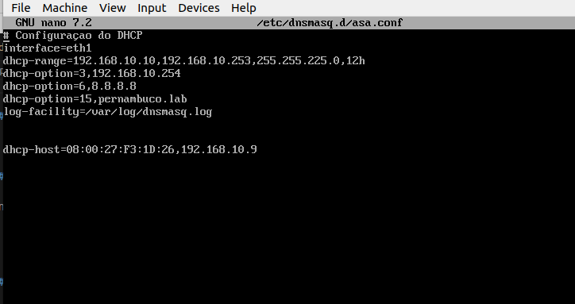
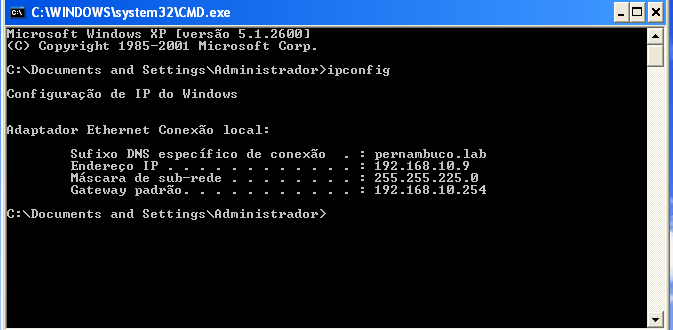
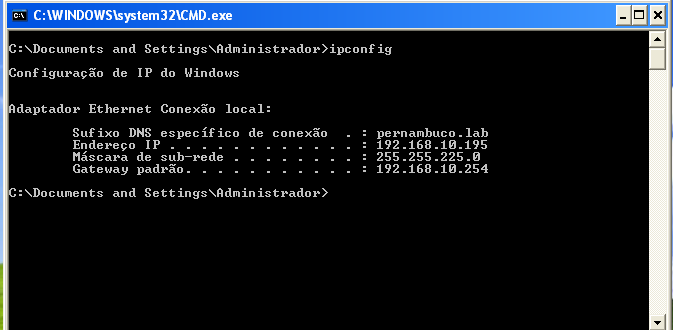

DHCP
Instalação
Você pode usar o atalho de teclado Ctrl + Alt + T no Ubuntu para abrir um terminal.
Digite o comando:
sudo apt update
sudo apt install dnsmasq
Inicie ou reinicie o serviço (se necessário):
sudo systemctl start dnsmasq
sudo systemctl enable dnsmasq
Estes comandos iniciam o serviço dnsmasq e o configuram para iniciar automaticamente durante a inicialização do sistema.
Com o Dns instalado e em execução na máquina, podomes configurar o arquivo /etc/dnsmasq.conf para personalizar as opções de configuração conforme necessário.
Configuração
Vamos precisar abrir o arquivo de configuração:
/etc/dnsmasq.d/asa.conf
Em seguida, vamos editar colocando as seguintes informações:
Configuração do DHCP
Interface=eth1
dhcp-range=192.168.10.10,192.168.10.253,255.255.0,12h
dhcp-option=3,192.168.10.254
dhcp-option=6,8.8.8.8
dhcp-option=15,pernambuco.lab
log-facility=/var/log/dnsmasq.log
dhcp-host=08:00:27:F3:1D:26,192.168.10.9
O resultado final do arquivo deve ser semelhante a esse:

Vale lembrar que precisamos sempre reiniciar o serviço após cada alteração, abaixo vou listar os comandos essenciais.
Para startar o serviço:
rc-service dnsmasq start
Para reiniciar o serviço
rc-service dnsmasq restart
Para parar o serviço
rc-service dnsmasq stop
Teste
Após o arquivo DHCP configurado e ter certeza que o serviço está rodando, vamos configurar uma máquina com o windows Xp como exemplo.
Vamos navegar até as configurações de rede da máquina(Conexão local) - Propriedades - Protocolo TCP/IP e ajustar os endereços do servidor DNS para:
Servidor DNS prefencial: 192.168.10.254 - IP usado para consfigurar o arquivo: /etc/network/interfaces (o mesmo que roda o serviço DHCP)
Servidor DNS alternativo: 8.8.8.8 - DNS configurado no arquivo: /etc/dnsmasq.d/asa.conf
Rodando o comando ipconfig para confirmar a distribuição dos ips na máquina Clone windows.

Aqui podemos observar na máquina real que foi disponibilizado os ips configurado no arquivo de configuração:
/etc/dnsmasq.d/asa
